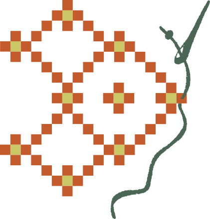

Artesanos Digitales · para quien vende, cobra y atiende
El negocio no necesita otro chatbot. Necesita que la pieza funcione.
Hoy hablamos de cómo la inteligencia artificial está cambiando el mostrador, la libreta y el WhatsApp. No el laboratorio.
La marca
Sistemas, automatizaciones y agentes hechos a la medida. Para negocios en México.
Quiénes arman la pieza
Dos oficios. Un taller.

Hendrik Martina
Arma el sistema: el hilo, las conexiones y la infraestructura para que la pieza no se caiga cuando el negocio la usa de verdad.
Jesús Lerma
Da forma a la pieza con quien la va a usar. Escucha el oficio, el mostrador y lo que no cabe en un formulario.
El piso, no el escenario
Así se opera todavía en la calle.

La libreta
Inventario, fiados y encargos en una hoja que solo entiende quien la escribió.

El WhatsApp
El mostrador real: pedidos, precios, “¿ya quedó?” y el comprobante en una foto.
El Excel
Facturas, cortes y reportes armados a mano cuando ya cerró la caja.
Censo Económico 2024 · INEGI
Ocho de cada cien ya la usan.
Empresas con 10 empleados o más. El promedio de la OCDE está en 20%.
Centro México Digital con el Censo Económico 2024 del INEGI. Relato: Líder Empresarial, 29 may 2026. No es una encuesta de chatbots.
La unidad que sí es la calle
La microempresa casi no entra en esa cifra.
de las unidades económicas del país son microempresas.
de ellas usa sistemas de inteligencia artificial.
no tienen internet. Hablarles de un modelo es hablarles de otro país.
Mismo censo, vía Centro México Digital. La transformación útil empieza donde ya venden, no donde ya tienen un departamento de sistemas.
El canal que ya existe
WhatsApp ya es el mostrador.
de las pymes mexicanas, según WhatsApp, ya adoptó la mensajería como canal de trabajo.
de esas pymes dice que le sirve para atender al cliente en el ciclo de venta.
No es un censo. Es la cifra de la propia plataforma, octubre de 2024. Sirve para ubicar el hábito, no para prometer ventas.
Expansión, 8 oct 2024, con cifras de WhatsApp.
Dónde sí cambia el día
Tres piezas. No un oráculo.

Atención
El mensaje de siempre, con respuesta a tiempo y el siguiente paso ya preparado. La persona sigue decidiendo el caso raro.
Papeles
Facturas, cortes y reportes que dejan de armarse a medianoche. El dato sale del mismo lugar donde se cobró.

Operación
Inventario, encargos y seguimiento que no viven solo en la cabeza de una persona.
Tres oficios, sin cuento de hadas
Lo que se nota el lunes.

La tienda
El pedido de WhatsApp queda registrado. El inventario deja de depender de la memoria del cierre.

El taller
La cotización sale de lo que ya se hizo, no de un “más o menos”. El cliente recibe un sí o un no con fecha.

El consultorio
La cita, el recordatorio y el pendiente dejan de perderse entre chats. Quien atiende sigue siendo la persona.
Ejemplos de oficio, no casos medidos ni testimonios. No hay aquí un porcentaje de ahorro.
El límite, dicho claro
No es magia. No es un 40% garantizado.
Asociación, no promesa
En el modelo del censo, 10 puntos más de adopción se asocian con 5.2% más de producción bruta y 3.8% más de salario. Eso no es el resultado de su negocio.
La traba no es la app
Quienes ya quieren usarla citan privacidad, falta de oficio y poca capacitación. El cuello de botella es el taller, no el modelo.
Centro México Digital / INEGI, Censo 2024. Barreras: análisis citado por Líder Empresarial, 2026. 31% privacidad, 28% habilidades, 27% capacitación.
Cómo trabajamos
Primero el oficio. Después la herramienta.
Diagnóstico
Vemos dónde se pierde tiempo, dinero o clientes. Si no hay pieza que valga, no se fabrica.
La pieza
Un flujo con reglas del negocio: qué puede hacer solo, qué pide permiso y qué se revisa.
Entrega
Queda en manos del equipo. Si solo funciona mientras nosotros estamos, no está terminada.
El taller, en piezas
Todo lo que entra en una solución.


Tienda, automatización, consultoría, infraestructura, software a la medida, red, botón, tijeras, jarrón y red tejida. La misma caja de la página.
Siguiente paso
Tráiganos un proceso que ya les duele.
Un pedido que se pierde. Un corte que se arma a mano. Un cliente que escribe y nadie contesta a tiempo. Con eso se ve si hay pieza.
Gracias.
Hendrik Martina, maestro del telar.
Jesús Lerma, maestro alfarero.